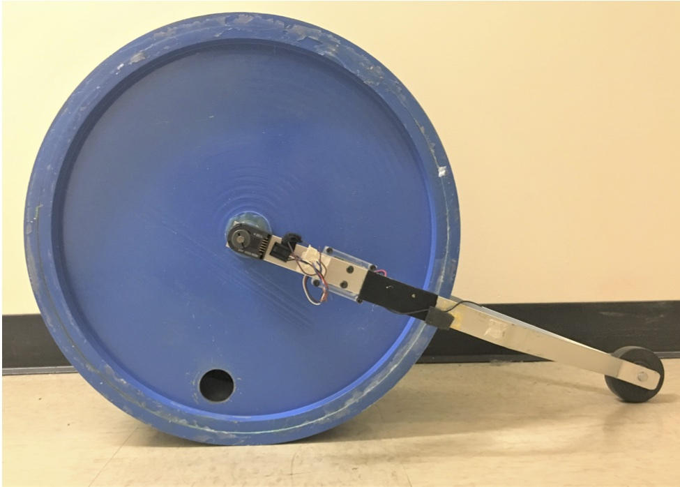

Tier 1 Candidate
Unbalanced Wheel
Model balanced and unbalanced wheel rotation using energy methods, compare predicted rotation rates to encoder measurements, and estimate a friction term when appropriate.
30,000 Ft View
In this experiment you will model the rotation of a wheel as it rolls down a ramp in two configurations: balanced and unbalanced. You will use energy methods to predict the wheel rotation rate, compare those predictions to encoder measurements, and determine an estimate for a friction term when the data support doing so.
Overview
Overview - Unbalanced Wheel
In this lab, you will analyze the motion of a wheel rolling down the outside Aero building ramp in two configurations: balanced and unbalanced. The unbalanced configuration includes an eccentric mass, which changes the wheel's rotational behavior.
Your job is to compare measured angular velocity from encoder data against a provided model. The focus is not on inventing the dynamics model from scratch. Instead, you will review the provided unverified derivation, implement the model carefully, process the data, and evaluate how well each model explains the observed motion.
By the end of the lab, you should be able to:
- convert encoder counts and timestamps into angular position and angular velocity
- compare balanced and unbalanced wheel behavior
- estimate or apply a friction term
- compute residuals between measurements and model predictions
- explain whether model mismatch appears random, systematic, or tied to known apparatus limits

Unverified Derivation
Provided Unverified Derivation — Unbalanced Wheel: Inertia Distribution and Rolling Dynamics
How To Use This Derivation
This derivation is provided so the lab can focus on experimental data analysis, model implementation, and model-data comparison rather than on dynamics derivation from a blank page. It is not externally verified.
Students should verify the derivation before using it as the basis for their analysis. Verification means checking the assumptions, signs, units, limiting cases, and energy terms well enough to decide whether the model is appropriate for comparison with the measured data.
The current setup uses the outside Aero building ramp. The ramp angle β must be measured for that setup before numerical model predictions are finalized.
Recommended verification checks:
- Confirm the rolling-without-slip constraint: v_cm = Rω
- Confirm the ramp-height relation: h = Rθ sin(β) using the current ramp angle
- Confirm that all kinetic-energy terms have units of joules
- Confirm that the friction moment contributes negative work: −Qθ
- Check the unbalanced-mass potential term by evaluating θ = 0
- Check the difference between the point-mass model and rigid-body model
The goal is not to re-create the derivation from scratch. The goal is to be able to defend the model you use when you compare it with data.
Section 1 — Physical Setup and Coordinate System
A cylindrical wheel rolls down the outside Aero building ramp without slipping. A trailing support apparatus is rigidly attached to the wheel; it translates but does not rotate. An eccentric mass can be bolted to the wheel to create the unbalanced configuration.
Coordinate system:
- θ = rotation angle, measured clockwise from the perpendicular vector into the ramp
- θ = 0 is the position when the wheel starts moving from rest
- For unbalanced trials: eccentric mass is positioned perpendicular to the ramp surface at θ = 0
Rolling constraint:
v_cm = Rω
where v_cm is the velocity of the wheel center and ω = dθ/dt.
System Parameters:
| Symbol | Value | Units | Description |
|---|---|---|---|
| M | 11.7 | kg | Mass of cylindrical wheel |
| M₀ | 0.7 | kg | Mass of trailing support apparatus |
| m | 3.4 | kg | Mass of eccentric mass |
| R | 0.235 | m | Radius of cylinder |
| κ | 0.203 | m | Radius of gyration of wheel |
| I | Mκ² | kg·m² | Moment of inertia of wheel about its center |
| β | TBD | deg | Outside-ramp slope angle |
| r | 0.178 | m | Distance from wheel center to eccentric mass center |
| r_extra | 0.019 | m | Radius of eccentric mass, modeled as a solid rod |
| g | 9.81 | m/s² | Gravitational acceleration |
Section 2 — Work-Energy Principle
The work-energy principle applied to the complete system is:
W_net = ΔKE = KE_final − KE_initial
The wheel starts from rest, so KE_initial = 0 for all trials.
The kinetic energy of the rolling system includes:
- rotational kinetic energy of the wheel: ½Iω²
- translational kinetic energy of the wheel center: ½Mv_cm²
- translational kinetic energy of the trailing apparatus: ½M₀v_cm²
Using the rolling constraint, all kinetic-energy terms can be written in terms of ω.
For the unbalanced configuration, the eccentric mass adds translational kinetic energy and, in MODEL_4, rotational kinetic energy about its own center.
Section 3 — MODEL_1: Balanced Wheel, No Friction
Configuration: Wheel and trailing apparatus only; no eccentric mass; no friction moment.
Assumptions:
- Cylinder rolls without slipping
- Trailing apparatus translates but does not rotate
- No friction at the axle
Energy equation:
(M + M₀)gRθ sin(β) = ½[(M + M₀)R² + Mκ²]ω²
Solving for angular velocity:
ω₁(θ) = √{2(M + M₀)gRθ sin(β) / [(M + M₀)R² + Mκ²]}
Section 4 — MODEL_2: Balanced Wheel, Constant Friction Moment
Modification of MODEL_1: Add a constant negative moment Q applied to the shaft of the wheel. Q represents friction at the axle; its value is unknown and must be determined empirically.
The friction moment does negative work:
W_Q = −Qθ
The energy equation becomes:
(M + M₀)gRθ sin(β) − Qθ = ½[(M + M₀)R² + Mκ²]ω²
Solving for angular velocity:
ω₂(θ, Q) = √{2[(M + M₀)gRθ sin(β) − Qθ] / [(M + M₀)R² + Mκ²]}
Empirical determination of Q:
- Q is not known from first principles; fit it to balanced experimental data
- Try 5 or more values of Q
- Identify a value that reasonably matches both balanced trials
- Carry the same Q into MODEL_3 and MODEL_4 unchanged
Section 5 — MODEL_3: Unbalanced Wheel, Eccentric Mass as Particle
Modification of MODEL_2: Add the eccentric mass m at radius r, modeled as a point particle.
The eccentric mass center moves in a circle of radius r about the wheel center. Its velocity has two components that depend on both ω and the current angular position θ.
The extra mass changes height both because the wheel center moves down the ramp and because the mass rotates around the wheel center. Relative to the initial configuration:
Δh_extra = Rθ sin(β) − r cos(θ + β) + r cos(β)
The translational speed of the eccentric mass contributes:
v_extra² = ω²(R² + 2Rr cos(θ) + r²)
Combining balanced-wheel energy, eccentric-mass potential-energy change, eccentric-mass translational kinetic energy, and friction work:
ω₃(θ, Q) = √{2[(M + M₀)gRθ sin(β) + mg(Rθ sin(β) − r cos(θ + β) + r cos(β)) − Qθ] / [(M + M₀)R² + Mκ² + m(R² + 2Rr cos(θ) + r²)]}
Section 6 — MODEL_4: Unbalanced Wheel, Eccentric Mass as Rigid Body
Modification of MODEL_3: Model the eccentric mass as a rigid body rather than a point particle. This adds a rotational kinetic-energy term for the eccentric mass about its own center of mass.
I_extra = ½mr_extra²
The rigid-body version uses the same numerator as MODEL_3. The difference is the additional rotational kinetic energy of the eccentric mass about its own center:
ω₄(θ, Q) = √{2[(M + M₀)gRθ sin(β) + mg(Rθ sin(β) − r cos(θ + β) + r cos(β)) − Qθ] / [(M + M₀)R² + Mκ² + m(R² + 2Rr cos(θ) + r²) + I_extra]}
Verification note: students should check whether the orbital contribution associated with the eccentric mass is already included before adding any additional parallel-axis term.
Section 7 — Residual Analysis Checks
After fitting models to data, use residual statistics to help judge agreement.
Residual definition:
ε_i = ω_observed,i − ω_predicted(θ_i)
Important: Do not take the absolute value of residuals. A non-zero mean residual may indicate systematic bias in the model or setup.
Evaluation rule: Evaluate the model at the experimentally measured θ_i values. Residuals must compare matched model and experimental points.
Useful checks:
| Check | Formula or method | What it helps you notice |
|---|---|---|
| Mean residual | ε̄ = (1/N)Σ ε_i | Possible systematic bias |
| Standard deviation | σ_ε = std(ε) | Random spread around the model |
| Uncertainty of mean | σ_ε / √N | Precision of the mean residual estimate |
| N | count of observations | Amount of data in the reliable range |
| Outlier count | count of unusually large residuals | Whether a few points dominate the mismatch |
| Scaled histogram | plot ε_i / σ_ε | Whether residuals look random or structured |
These checks guide interpretation; they do not automatically prove which model is correct.
Model Equations — Unbalanced Wheel: Inertia Distribution and Rolling Dynamics
System Parameters
| Symbol | Value | Units | Definition |
|---|---|---|---|
| M | 11.7 | kg | Mass of cylinder |
| M₀ | 0.7 | kg | Mass of trailing support apparatus |
| m | 3.4 | kg | Mass of eccentric mass |
| R | 0.235 | m | Radius of cylinder |
| κ | 0.203 | m | Radius of gyration of wheel |
| r | 0.178 | m | Distance from wheel center to eccentric mass center |
| r_extra | 0.019 | m | Radius of eccentric mass, modeled as a solid rod |
| β | TBD | deg | Outside-ramp slope angle; measure before deployment |
| g | 9.81 | m/s² | Gravitational acceleration |
| Q | fit from data | N·m | Constant friction moment at axle |
| θ | measured | rad | Rotation angle; zero when wheel starts from rest |
| ω | measured/model output | rad/s | Angular velocity |
Core Relations
Moment of inertia of the balanced wheel:
I = Mκ²
Moment of inertia of the eccentric mass about its own center:
I_extra = ½ m r_extra²
Rolling constraint:
v_cm = Rω
Work-energy principle:
W_net = ΔKE = KE_final − KE_initial
For this lab, the wheel starts from rest, so KE_initial = 0.
MODEL_1 — Balanced Wheel, No Friction
ω₁(θ) = √{2(M + M₀)gRθ sin(β) / [(M + M₀)R² + Mκ²]}
Uses: M, M₀, R, κ, β, and g.
MODEL_2 — Balanced Wheel, Constant Friction Moment
ω₂(θ, Q) = √{2[(M + M₀)gRθ sin(β) − Qθ] / [(M + M₀)R² + Mκ²]}
Q is unknown. Fit it from balanced experimental data by trying multiple values and selecting a value that matches both balanced trials reasonably well. Carry the same Q into MODEL_3 and MODEL_4.
MODEL_3 — Unbalanced Wheel, Eccentric Mass as Particle
ω₃(θ, Q) = √{2[(M + M₀)gRθ sin(β) + mg(Rθ sin(β) − r cos(θ + β) + r cos(β)) − Qθ] / [(M + M₀)R² + Mκ² + m(R² + 2Rr cos(θ) + r²)]}
Uses the MODEL_2 friction moment and adds the eccentric mass as a point particle.
MODEL_4 — Unbalanced Wheel, Eccentric Mass as Rigid Body
I_extra = ½ m r_extra²
ω₄(θ, Q) = √{2[(M + M₀)gRθ sin(β) + mg(Rθ sin(β) − r cos(θ + β) + r cos(β)) − Qθ] / [(M + M₀)R² + Mκ² + m(R² + 2Rr cos(θ) + r²) + I_extra]}
MODEL_4 differs from MODEL_3 by adding the eccentric mass's rotational kinetic energy about its own center.
Verification check: make sure the orbital term associated with the eccentric mass is not double-counted when comparing MODEL_3 and MODEL_4.
Residual Checks
Use a signed residual and state the convention:
ε_i = ω_observed,i − ω_predicted(θ_i)
Evaluate the model at the same measured θ_i values used for the observed data. Do not compare observed data to a model curve evaluated only on a separate uniform plotting grid.
Useful checks include:
| Check | What it helps you notice |
|---|---|
| Mean residual | Possible systematic bias if the mean is far from zero |
| Residual standard deviation | Typical random spread around the model |
| Uncertainty of the mean | How precisely the mean residual is estimated |
| Number of observations | Whether the comparison used enough points in the reliable range |
| Outlier count | Whether a few points dominate the apparent mismatch |
| Scaled residual histogram | Whether the residuals look roughly random or have structure |
These checks do not tell you the answer by themselves. Use them to decide what the data suggest about model adequacy, setup effects, and measurement limitations.
Procedure
Procedure — Unbalanced Wheel: Inertia Distribution and Rolling Dynamics
Overview
This lab investigates the dynamics of a cylindrical wheel rolling down the outside Aero building ramp in two configurations: balanced (no eccentric mass) and unbalanced (eccentric mass installed). Students analyze encoder data from the ESP32 data-acquisition system and compare the measured angular velocity against a provided four-model hierarchy.
The lab has two distinct parts that must be done in sequence:
- Pre-Lab (before the lab session): Review and verify the provided model derivation, then implement the MATLAB function. This must be complete before you handle the apparatus.
- In-Lab: Connect to the ESP32 encoder monitor, run the apparatus on the outside ramp, collect data, and perform analysis.
Part 1 — Pre-Lab: Provided Unverified Derivation and MATLAB Setup
Before arriving at the apparatus:
- Review the provided MODEL_1 through MODEL_4 derivation/
- Verify that the assumptions, signs, energy terms, and inertia terms are consistent with your dynamics knowledge
- Record any correction or unresolved concern in your analysis notes
- Implement
computeModel.mor an equivalent model function and verify correct operation - Plot expected angular velocity versus theta for all four models over the reliable analysis range before starting the experiment
Pre-lab verification: the MATLAB model plots should show reasonable physical behavior before any experimental data is loaded. Treat the expected trend as a sanity check, not as a conclusion about the real data.
Part 2 — Hardware and Materials
| Item | Description |
|---|---|
| Unbalanced wheel apparatus | Cylindrical wheel with training wheel supports, mounted encoder, electronics box, and removable eccentric mass |
| Eccentric mass | Solid rod mounted to create the unbalanced configuration |
| Outside Aero building ramp | Fixed ramp used for the current setup; no foldable ramp assembly is required |
| 5 V phone charger | Powers the electronics mounted on the wheel |
| USB-C to USB-C cables (2) | Used for charging/power and data-transfer support as directed by the teaching team |
| Encoder | Mounted on the wheel and used to derive angular position and angular velocity |
| ESP32 DAQ system | Wireless encoder acquisition system with local web interface |
| Student cellphone | Used to connect to the ESP32 Wi-Fi network, view encoder data, and save CSV files |
| MATLAB | Used for data processing, model implementation, plots, and residual statistics |
The current setup uses the outside ramp. Do not assemble the older foldable ramp hardware, and do not use older ramp assembly instructions unless the teaching team explicitly redirects the lab.
Part 3 — ESP32 and Encoder Setup
- Turn on or connect power to the ESP32 DAQ system and verify that the electronics are powered.
- On a cellphone, connect to the ESP32 Wi-Fi network named Unbalanced Wheel.
- Open a browser on the phone and go to the appropriate webpage as given by the lab staff.
- Confirm that the encoder monitor page loads before moving the wheel.
- Slowly turn the wheel by hand. The web interface should show two encoder graphs or channels updating with positive values for the expected rolling direction.
- If the displayed encoder data are static, negative in the expected rolling direction, or obviously discontinuous, stop and ask the teaching team before collecting trials.
- Place the electronics box on the left side of the wheel when looking from the top of the ramp toward the bottom. This orientation helps preserve the expected encoder sign convention.
"Displaying encoder data" means the web interface is actively updating the exported encoder channels as the wheel turns. Do not release the wheel until you have seen the encoder values respond to gentle hand motion.
Part 4 — Running the Experiment
Safety requirements:
- All students must stand to the side of the ramp during each run.
- Assign one person to receive or stop the wheel at the bottom of the ramp for every trial.
- Keep the training wheel behind the large wheel in the intended rolling direction.
- Move the apparatus carefully: lift by the main wheel body, not by the training wheel or electronics.
- For unbalanced trials, place the eccentric mass perpendicular to the ramp surface at theta = 0 before release.
Opening the Encoder Monitor
- Open the ESP32 encoder monitor web interface on the connected cellphone.
- Verify that the encoder values update before each trial.
- Prepare to save the CSV file immediately after each run.
Balanced Wheel Trials (2 trials)
- Center the wheel at the marked starting location on the outside ramp with the training wheel trailing.
- Confirm that all students are standing to the side, the electronics are powered, and the encoder sign is correct.
- Start data acquisition from the ESP32 web interface.
- Release the wheel smoothly from rest.
- Stop and save the data once the wheel reaches the bottom of the ramp.
- Repeat steps 1-5 for the second balanced trial.
Unbalanced Wheel Trials (2 trials)
- Install the solid rod eccentric mass on the wheel.
- Position the eccentric mass at the top of the wheel, perpendicular to the ramp surface, at theta = 0.
- Confirm that the electronics are still powered and the encoder monitor is updating.
- Repeat the balanced-trial release and save workflow for two unbalanced trials.
Part 5 — Data Files
- The ESP32 encoder monitor saves raw encoder CSV data to the cellphone.
- Current CSV columns are: Index, Time [ms], QuadEncoder [counts], LS7184Encoder [counts].
- Save data promptly when the wheel reaches the bottom to avoid capturing stopping effects after the useful run.
- Reliable data range: 0.5 rad < theta < 15 rad, unless the teaching team updates this range for the outside-ramp setup.
- Save all 4 trial files; name files consistently so balanced and unbalanced trials can be identified.
- Rename files using the catalog convention:
encoder_data_test#_balanced.csvandencoder_data_test#_unbalanced.csv.
If both QuadEncoder and LS7184Encoder are included in the exported CSV, compare the channels and justify which one you use for final theta and omega calculations.
Known Pitfalls and Common Issues
| Issue | Cause | Fix |
|---|---|---|
| Encoder data does not update | Phone is not connected to ESP32 Wi-Fi, web interface is not loaded, or DAQ is not powered | Reconnect to Unbalanced Wheel, reload the web interface, and verify power before releasing the wheel |
| Encoder data goes negative | Wheel orientation or sign convention is reversed | Place the electronics box on the left side when viewed from the top of the ramp looking down |
| Large gaps, plateaus, or spikes in data | Packet loss or poor acquisition | Discard and re-run bad trials before leaving the lab |
| Noisy or unreliable data at low theta | Startup transient as wheel accelerates from rest | Trim analysis range to theta > 0.5 rad unless instructed otherwise |
| Noisy or unreliable data near the end of the run | Stopping or ramp-end effects | Stop analysis before the end-effect region; use the assigned reliable range |
Instrumentation and DAQ Details
Sensor and Instrumentation Summary
Primary Sensor — HEDS-5505
| Property | Value | Source |
|---|---|---|
| Sensor model | HEDS-5505 | instructor-provided confirmation + staged encoder PDF lineage |
| Measurement role | Encoder counts used to derive rotation angle theta [rad] and angular velocity omega [rad/s] | updated lab catalog + staged handout lineage |
| Mounting | On the wheel; rotates with the wheel | catalog + staged handout lineage |
| Communication | ESP32 wireless/web-interface data acquisition | updated lab catalog |
| Current export fields | Index, Time [ms], QuadEncoder [counts], LS7184Encoder [counts] | updated lab catalog |
| Reliable analysis range | 0.5 rad < theta < 15 rad, unless updated for outside-ramp setup | staged handout + historical code |
| Counts per revolution | Use the value provided in the assigned encoder documentation | Needed to convert counts to angle |
| Output type | Quadrature and step/direction count channels are exported by the current interface | Compare channels before choosing final analysis input |
| Voltage range | Use the provided DAQ/encoder documentation | Needed for instrumentation checks |
| Accuracy / resolution | Use the provided encoder documentation and observed count resolution | Needed for uncertainty calculations |
The staged encoder PDF plus instructor confirmation identify the encoder as HEDS-5505, but a clean text extraction or manual review is still needed to fill in the actual spec values.
Known issue: packet loss or poor acquisition can produce large gaps, plateaus, or spikes in the recorded data.
DAQ Hardware — ESP32 System
| Property | Value | Source |
|---|---|---|
| Platform | ESP32 DAQ system | updated lab catalog |
| Interface | ESP32 web interface accessed from a cellphone | updated lab catalog |
| Wi-Fi network | Unbalanced Wheel | TE review note; confirm before deployment |
| Browser URL | [ESP32 WEB INTERFACE URL PLACEHOLDER — confirm exact local address before deployment] | needed before student release |
| Power | 5 V phone charger mounted/connected with current setup | TE review note |
| Export format | CSV downloaded from encoder monitor website | updated lab catalog |
| Default filename | encoder_data_# | updated lab catalog |
| Student rename convention | encoder_data_test#_(un)balanced.csv | updated lab catalog |
| Encoder channels | QuadEncoder and LS7184Encoder counts | updated lab catalog |
Configuration check: with the phone connected to the ESP32 web interface, turn the wheel gently by hand. The encoder graphs or channel values should update with positive values for the expected rolling direction before any trial is released.
DAQ Software — ESP32 Encoder Monitor
| Property | Value | Source |
|---|---|---|
| Application | ESP32 encoder monitor web interface | updated lab catalog |
| Procedure reference | [AES-Encoder_Raw_vs_Buffer PROCEDURE LINK PLACEHOLDER — replace with rendered student-facing link] | updated lab catalog |
| Output channels | Index, Time, QuadEncoder, LS7184Encoder | updated lab catalog |
| Collection device | Student cellphone | updated lab catalog |
| Stop condition | Save data once the wheel reaches the bottom of the outside ramp | updated lab catalog + TE review note |
Full DAQ Chain Summary
Wheel rotation
-> HEDS-5505 wheel encoder
-> ESP32 DAQ system
-> ESP32 web interface on cellphone
-> CSV export (Index, Time, QuadEncoder, LS7184Encoder)
-> MATLAB processing to compute theta and omega
Students are end-users of the DAQ chain. They operate the apparatus and encoder monitor but do not program the ESP32 during this lab.
Remaining Gaps
- Confirm the exact ESP32 web-interface URL for the student procedure.
- Confirm the outside-ramp angle
betaand update the model files before deployment. - Use the provided encoder documentation and exported data columns to justify angle conversion and uncertainty assumptions.
- Compare exported encoder count channels and justify which one is used for final theta/omega calculations.
- Keep solution scripts and solution reports in staff-only storage unless intentionally released.
Sample Data
Sample Data - Unbalanced Wheel
What the Current ESP32 System Records
The current Summer 2026 hardware uses an ESP32 web interface. The encoder monitor website saves CSV files to a student's phone using names such as encoder_data_#.
Per the updated lab catalog, the current CSV columns are:
| Channel | Symbol | Units | Description |
|---|---|---|---|
| Index | — | unitless | Sample counter |
| Time | t | ms | Timestamp at capture |
| QuadEncoder | — | pulse count | Current relative position of the quadrature encoder |
| LS7184Encoder | — | pulse count | Current relative position of the step/direction encoder |
Older LabVIEW/NI exports used a different processed format (time, theta, omega). That format should be treated as historical reference only unless your instructor intentionally provides old-hardware data.
Data Collection Summary
| Trial | Configuration | Count |
|---|---|---|
| 1–2 | Balanced wheel (no eccentric mass) | 2 trials in the current handout lineage |
| 3–4 | Unbalanced wheel (eccentric mass installed) | 2 trials in the current handout lineage |
Total current expectation: 4 data files per lab session
Reliable Data Range
Per the catalog, prior compilation, staged handout, and staged historical code: 0.5 rad < θ < 15 rad, unless the teaching team updates this range for the outside-ramp setup
- θ < 0.5 rad: startup transient region
- θ > 15 rad: likely stopping or ramp-end effects; confirm the final cutoff for the outside-ramp setup
File Naming Conventions
The current encoder monitor website automatically saves files as:
encoder_data_#
After saving, rename files using the updated catalog convention:
encoder_data_test#_balanced.csvencoder_data_test#_unbalanced.csv
Use test numbers that make the two balanced trials and two unbalanced trials unambiguous.
MATLAB Data Loading
Students should write or adapt MATLAB code that:
- loads one CSV trial file from the ESP32 encoder monitor
- converts encoder counts and timestamps into θ and ω as required by the current analysis workflow
- trims to the reliable range
- plots ω vs. θ
- computes residuals against the selected model
Known Anomalies and Quirks
- Wireless packet drops can create gaps, plateaus, or spikes in the data
- Very low-θ data may not match the rolling model well because of startup effects
- Balanced and unbalanced runs should be named clearly and consistently
FAQs
FAQs - Unbalanced Wheel
Do I need to derive the model from scratch?
No. You are given a provided unverified derivation. You should review and verify the reasoning, signs, assumptions, and units before using it, but the main lab task is model implementation and comparison against data.
Which encoder channel should I use?
If both QuadEncoder and LS7184Encoder appear in the exported CSV, compare the channels and justify which one you use for final angle and angular velocity calculations.
Why should I trim the data range?
The recommended reliable range is approximately 0.5 rad < theta < 15 rad. Very early data may include startup effects, and very late data may include stopping or ramp-end effects. Use any updated cutoff provided for the outside-ramp setup.
What residual should I compute?
Use a signed residual and state your convention. A common choice is:
residual = omega_observed - omega_predicted
Why are the raw data files not on the site?
Large or frequently updated data files are distributed through SharePoint. Use the student-facing data folder linked in the Sample Data section.
What should I discuss if the model does not match perfectly?
Discuss likely physical and measurement causes: encoder noise, wireless packet drops, release variability, start/end transients, friction modeling, and whether the eccentric mass is better treated as a point mass or rigid body.